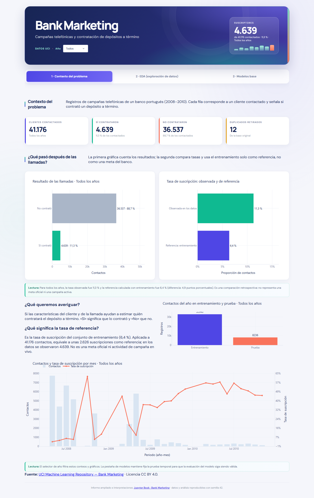

Pestaña 1 · Contexto del problema#
La primera pestaña del dashboard responde tres preguntas: qué datos hay, qué pasó después de las llamadas y cómo se reparten esos datos entre entrenamiento y prueba. Este capítulo recorre, en el mismo orden en que aparecen en la pestaña, cada resultado que se muestra, lo reproduce con el código del propio dashboard y lo interpreta. Las cifras se calculan en la ejecución del cuaderno, de modo que coinciden con las del dashboard cuando el selector de año está en «Todos».
Cada interpretación sigue el mismo orden: primero lo que muestra el resultado, luego lo que significa para el problema y al final la decisión que se toma a partir de ello.

La pestaña contiene seis resultados, que se interpretan en este orden:
Las tarjetas de la cabecera: tamaño de la base y depuración.
El resultado de las llamadas.
La tasa de suscripción observada frente a la de referencia.
Los contactos en entrenamiento y prueba.
Los contactos y la tasa de suscripción por mes.
El selector de año.
1.1 Tarjetas de la cabecera: tamaño de la base y depuración#
| Valor | Nota | |
|---|---|---|
| Clientes contactados | 41.176 | Todos los años |
| Sí contrataron | 4.639 | 11,3 % de los contactados |
| No contrataron | 36.537 | 88,7 % de los contactados |
| Duplicados retirados | 12 | De la base original |
Interpretación. El archivo trae 41.188 registros. Tras retirar 12 duplicados exactos (0,03 % de las filas) quedan 41.176 clientes contactados: 4.639 contrataron el depósito (11,3 %) y 36.537 no lo hicieron (88,7 %).
Así mismo, un duplicado exacto no aporta información nueva y, si se conservara, la misma fila podría quedar a la vez en entrenamiento y en prueba, lo que inflaría la evaluación del modelo. La cantidad retirada es pequeña, de modo que la depuración no cambia la composición de la base.
Por tal motivo, se eliminan los duplicados antes de partir los datos y todas las cifras del dashboard se calculan sobre los clientes depurados.
1.2 Resultado de las llamadas#
Interpretación. De los 41.176 contactos, 36.537 terminaron en «No contrató» (88,7 %) y 4.639 en «Sí contrató» (11,3 %): hay 7,9 clientes que no contratan por cada uno que sí lo hace.
Esto significa que el problema está desbalanceado: una regla que respondiera siempre «No» acertaría el 88,7 % de las veces sin identificar a un solo suscriptor, de modo que la exactitud (accuracy) por sí sola no permite distinguir un modelo útil de uno trivial.
Por ello, se evalúa con AUC, AUC-PR, recall y F1, que sí reflejan si el modelo encuentra a los suscriptores (resultados en la pestaña 3), y se compara siempre contra la regla simple de responder «No».
1.3 Tasa de suscripción: observada y de referencia#
Interpretación. La tasa observada en todos los datos es 11,3 % y la de referencia, que es la del conjunto de entrenamiento, es 6,4 %: una diferencia de 4,9 puntos porcentuales. Aplicada a los 41.176 contactos, la referencia equivale a unas 2.626 suscripciones frente a las 4.639 observadas.
Lo anterior indica que el entrenamiento recoge un periodo de baja suscripción: por año, la tasa pasa de 4,8 % en 2008 a 19,5 % en 2009 y a 52,1 % en 2010. La referencia es, entonces, un punto de comparación retrospectivo, no una meta de campaña ni una estimación de lo que ocurrirá después.
Por tal motivo, se opta por leer esta comparación solo como evidencia de que la tasa cambia con el tiempo y por evaluar el modelo en un periodo posterior al de entrenamiento (sección 2 del cuaderno).
1.4 Contactos en entrenamiento y prueba#
| Registros | Suscriben | Prevalencia | Desde | Hasta | |
|---|---|---|---|---|---|
| Entrenamiento | 32.940 | 2.100 | 6,4 % | 2008-05 | 2009-05 |
| Prueba | 8.236 | 2.539 | 30,8 % | 2009-05 | 2010-11 |
Interpretación. El entrenamiento reúne 32.940 contactos (80,0 %), de 2008-05 a 2009-05, con una prevalencia de 6,4 %; la prueba reúne 8.236 contactos, de 2009-05 a 2010-11, con 30,8 %. La prevalencia se multiplica por 4,8 de un conjunto al otro.
Entonces, el modelo aprende en un periodo de baja suscripción y se evalúa en otro de suscripción alta y contexto económico distinto. El corte se hace por orden cronológico, sin barajar, porque las filas del archivo están ordenadas en el tiempo, y cae dentro de 2009-05, el único mes presente en ambos conjuntos.
En consecuencia, se decide leer el desempeño de la pestaña 3 como el de un modelo que debe generalizar a otro periodo y no como el de uno evaluado en condiciones estables; por eso la prueba permanece fija aunque se cambie el año en el selector.
1.5 Contactos y tasa de suscripción por mes#
Interpretación. La base cubre 26 periodos año-mes. Los cinco con más contactos (2008-05, 2008-06, 2008-07, 2008-08 y 2009-05) concentran el 72,3 % de los registros y su tasa de suscripción va de 3,1 % a 9,0 %; en cambio, 13 periodos tienen menos de 300 contactos y suscribe el 48,6 % de sus clientes. La correlación de Spearman entre el volumen y la tasa por periodo es -0,67.
Esto significa que las campañas masivas rinden poco y las pequeñas rinden mucho, pero con estos datos no se puede separar si la diferencia viene de a quién se llamó o del momento económico en que se llamó. Además, cada periodo tiene su propia tasa base, así que el mes funciona como una marca del periodo y no solo como estacionalidad: mayo tuvo 3,1 % en 2008, 9,0 % en 2009 y 57,5 % en 2010.
Por lo anterior, conviene no mezclar los periodos al azar al validar el modelo y mantener month en observación, porque puede identificar el periodo sin aportar información de uso real (secciones 3.6 y 4.9 del cuaderno).
1.6 Selector de año#
| Contactos | Participación | Suscriben | Tasa | Periodos | En entrenamiento | En prueba | |
|---|---|---|---|---|---|---|---|
| 2008 | 27.682 | 67,2 % | 1.339 | 4,8 % | 2008-05 a 2008-12 | 27.682 | 0 |
| 2009 | 11.436 | 27,8 % | 2.227 | 19,5 % | 2009-03 a 2009-12 | 5.258 | 6.178 |
| 2010 | 2.058 | 5,0 % | 1.073 | 52,1 % | 2010-03 a 2010-11 | 0 | 2.058 |
Interpretación. El selector filtra las tarjetas y los gráficos de las pestañas 1 y 2. En 2008 hay 27.682 contactos (67,2 % de la base) con una tasa de 4,8 %; en 2009, 11.436 con 19,5 %; y en 2010, 2.058 con 52,1 %. Los tres años no pesan lo mismo y los periodos que cubre cada uno tampoco.
Así mismo, las diferencias entre años mezclan dos efectos, a quién se llamó y el contexto del periodo, de modo que una tasa más alta en un año no se puede atribuir a un tipo de cliente en particular. Además, los años no coinciden con los conjuntos: 2009 está repartido entre entrenamiento y prueba.
Por tal motivo, se usa el selector para describir cada año y no para evaluar el modelo; la pestaña 3 no responde a él porque la prueba temporal debe permanecer fija.
Dónde ampliar lo que el dashboard no muestra#
Detalle |
Dónde se desarrolla |
|---|---|
Problema de investigación, justificación, fuente, licencia y diccionario de variables |
|
Calidad de los datos: faltantes, duplicados, valores imposibles, atípicos, sesgos de muestreo y ética |
|
Partición cronológica 80/20 y reserva del conjunto de prueba |
|
Variable objetivo, deriva temporal y validación aleatoria frente a temporal |